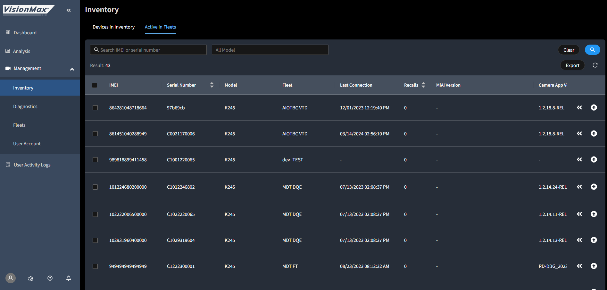

Platform Science × MiTAC VisionMax
美國車隊軟體商 Platform Science 評估 MiTAC VisionMax SDK 與 CDR 攝影機整合，目標建立 cloud-to-cloud 平台夥伴關係。
| 姓名 | 角色 |
|---|---|
| Vinicius Francisquinho | Engineering Director, Video Safety 今年初新任，主要技術決策者 |
| Vikram Jayaraman | 前期聯絡窗口 |
| 姓名 | 角色 |
|---|---|
| Stark Yang（楊永吉） | Director, Video Telematics |
| Brian Chienlee（李健） | VisionMax 解決方案負責人 |
| Conant Ho（何肇峯） | 技術 PM，主要對外窗口 |
| Righter Song（宋祐全） | RD Engineer，韌體操作 |
| Paul SP Lee（李世博） | PS Account Sales |
Stark 將 Brian 加入串列，請 Vikram 分享 Platform Science 的 camera project plan。
Vikram 表達對 K265 進行 additional validation，並提出需求：
- multi-channel 支援
- CAN decoding
- non-China manufacturing
Brian 為 Vinicius 建立 Production 帳號，提供 API KEY、Portal 連結、API 文件。
Righter 提供 device update 文件附件。
Vinicius 主動提案、自我介紹為新任 Engineering Director。
Conant 安排，確認 4/29 召開 Kickoff 會議。
Vinicius 回報 K265 無法加入 VisionMax portal，提供 IMEI/SN 後，Righter 當日處理完成。
- K265: IMEI 353995720096134 / SN L1225380005
- K245: IMEI 357216578001266 / SN F4723090088
會後 Vinicius 提出行動清單：SDK 文件、簡報、設備報價、下單流程。
Conant 提供 CDR roadmap 與 SDK 連結。
Vinicius 詢問 K265 / K245 / K246 Orion 是否共用同一 SDK。
Conant 確認 SDK 通用於所有 CDR 機型，model-specific 差異文件中已標注。
K245：成功 — 已完成 OEM image 修改、替換錄影 app、資料傳輸至自有 server。
K265：失敗 — portal 仍無法運作，推測 image 有誤。
初期整合優先走 cloud-to-cloud 路線，並再次催促報價。
| 型號 | 代號 | 狀態 |
|---|---|---|
| K220 | Sprint | 可用 |
| K245 / K245c | Gemini SE | 測試成功 |
| K246 | Orion | 詢問中 |
| K265 | EVO | Image 卡關 |
| K425 | Lightmetrics→MiTAC | 2026 Q1 測試中 |
| Master Portal | portal.visionmaxfleet.com |
| Fleet Portal | visionmaxfleet.com |
| API Docs | visionmax.redocly.app |
| SDK | Google Drive 連結 |
Vinicius 5/7 confirmed K265 image LM 版本不能透過 SD update 升到 VisionMax(Righter 解釋)— 設備 F4723090033 已加進 inventory(Master Portal),後續從 Diagnostics 監控狀態。



- Righter 為 K265 提供 image 修正流程（對齊先前提供 K245 的版本）—— Vinicius 判斷 K265 image 有誤，導致無法在 portal 運作。急迫
- Conant/Sales 提供 Vinicius 要求的 設備報價 與 下單流程（Vinicius 已二次催促：4/29 與 5/4）急迫
- Brian/RD 2026 Q1 K425 image 完成後，主動通知 Platform Science 更新。
- 待釐清 確認 Vinicius 最終商業模式：純 cloud-to-cloud API 整合 vs. OEM image 客製化。
- 待釐清 K246 Orion 是否列入採購清單。
- SDK 評價正面：「comprehensive」「worked nicely」
- K245 OEM image 修改完成，代表整合能力強
- 1 個月內完成接洽→測試→採購意向，動能快速
- test truck 安裝計畫，具備擴大採購潛力
- cloud-to-cloud 路線暗示長期平台夥伴關係
- K265 image/portal 問題重複出現，恐影響客戶信任
- 報價持續未回，可能導致決策停擺
- non-China manufacturing 要求是潛在否決條件
- cloud-to-cloud vs OEM 雙路線並行，整合範圍不確定
| 表面需求 | 背後真正在意的事 |
|---|---|
| 需要 SDK 文件 | 在內部評估 MiTAC 是否值得深度投入 |
| 詢問報價 | 想確認 MiTAC 有意願正式做生意，不只是做 POC |
| K265 portal 問題 | 在測試 MiTAC 的技術支援反應速度 |
| 提到 cloud-to-cloud | 希望與 MiTAC 是平台對平台的夥伴關係，而非純硬體採購 |
技術型決策者，週末自己動手測試 SDK——他同時是評估者也是執行者。兩度催促報價說明他內部已有採購壓力，主動性高。用「初期實作」描述 cloud-to-cloud，暗示後續還有更深合作規劃。
CONNECTSOURCE × Passenger Blurring
澳洲 MiTAC AU(Wendy + Cary + Elvis)代 reseller 客戶提出乘客模糊化 AI 功能需求,引發內部對路線圖透明度、成本歸屬,及 portal 配置粒度的討論。Kenny 5/7 接手對外,5/8 開 sync-up 升格主對接 PM。
- Kenny 升格主對接 PM — Cary「we will be stalking you」,從現在開始直接 ping Kenny,跳過 Brian/Spencer
- 🚨 Q2 portal path 5/7 對外承諾要校正 — Master Portal 路徑只到 main fleet 級,需改成 per-contract-fleet(雙路徑 A/B 待 Brian/Spencer 拍)
- Q1 客戶用 API 直接整合就好 — Kenny 要問 Spencer 能否 share 內部 API doc
- 對外回信草稿已擬好,等 Kenny 確認後寄
| 姓名 | 角色 | 立場 |
|---|---|---|
| Wendy Hammond | MiTAC AU 業務（wendy.hammond@mitac.com.au）— 5/8 解密身份,代 reseller 客戶端傳達需求 | 業務端 |
| Cary Lo | MiTAC AU 業務 / Account Manager — 跟 Wendy 同部門,5/8 sync-up 主對話人 | 業務端 |
| Elvis Tran | MiTAC AU PM — 5/8 sync-up 加入,負責 release notes review,技術糾正 Q2 portal path | 業務端 |
| Brian Chienlee（李健） | VisionMax 解決方案負責人（MiTAC HQ 產品端） | 產品端 |
| Spencer Su（蘇家弘） | Cloud / API team lead（HQ）— Q1 API doc / Q2 portal 路徑可實作性 owner | 產品端 |
| Pokai (Kenny) Huang | Technical Support, Brian's team @ Taipei — 5/7 對外回信 / 5/8 主動 reach out 開 sync,目前 MiTAC AU 線主對接 PM | 主對接 |
財務上具備可行性，前提是 $6/月/連線的定價模型已涵蓋 AWS 成本分攤（$700/月 ÷ 1,000 連線 = $0.7/月/連線）。
Wendy 向 Brian 提出馬來西亞客戶的 Passenger Blurring 需求，說明隱私法規與工會背景、合約規模（1,165 台、1,000 連線、36 個月）。
Cary Lo 提問：1,165 台 HW 月收益約 $1,165 USD；AWS 成本 $700/月 是否已計入定價？規模是否符合功能適用條件？
Brian 回覆：確認 AWS 成本 $700/月；此功能原為 BMS 客戶開發，整合至 CONNECTSOURCE 需額外工作；目標 Q2 2026（七月）。
Wendy 表達不滿:長期無路線圖同步會議、業務端無法對客戶承諾。
Brian 回覆:分享 AI Feature Roadmap 簡報與需求追蹤 Sheets,確認七月為目標。
(1) Passenger-only blurring (driver 保留) 是否可行?
(2) 可否套用到特定 Fleet / Contract Fleet?
(3) 能否安排 Teams customer session?
Q1:Yes feasible — European deployment API 已支援 driver/passenger 獨立 blurring(BMS 內部 API 為依據)
Q2:Path 在 Master Portal > Management > Fleets > (select) > Fleet Detail > Configurations > (new) Blurring,per-Fleet 粒度
Q3:Fully supportive,先內部對齊 Q1/Q2
🚨 Q2 portal path 被 Elvis 螢幕分享現場糾正:Master Portal 路徑只到 main fleet 級,動一個 = 影響所有 contract fleets,**沒粒度**。客戶結構需 per-contract-fleet 粒度(沿用 Live User pattern)。
修正後雙路徑:(A) Master Portal 補 contract fleet 視圖 ⚠️ 隱私問題 / (B) Fleet Portal 加 per-contract-fleet UI(沿用 Live User)
Q1 API doc:Cary 追問「what can I share with my customer?」客戶妥協用 API,Kenny 承諾問 Spencer 能否 share 內部 API doc
Cary 對 Kenny 評價:「very refreshing」/「we will be stalking you」— Kenny 升格 MiTAC AU 線主對接 PM
Master Portal > Management > Fleets > (select Fleet) > Fleet Detail > Configurations > (new) Blurring

這條路徑只能控制 main fleet 級,動一個 = main fleet + 所有 contract fleets 一起套用,沒 per-contract-fleet 粒度。客戶結構(Australia 1 fleet + 多 reseller contract fleets)必須 pinpoint 特定 contract fleet。
(A) Master Portal 補 contract fleet 視圖 — ⚠️ 隱私問題(contract fleet 不見得想讓上層 dealer 看到)
(B) Fleet Portal 加 per-contract-fleet Blurring config UI — 沿用 Live User pattern(現有 Fleet Portal 已示範可行)
| 面向 | Wendy（業務端）的期望 | Brian（產品端）的現實 |
|---|---|---|
| 功能時程 | 盡快上線，可對客戶承諾 | 需額外開發，Q2 2026 / 七月 |
| 功能範圍 | CONNECTSOURCE 可直接使用 | 需針對 CONNECTSOURCE 重新整合 |
| 資訊頻率 | 定期路線圖同步 | 被動回應，無主動推播機制 |
| 承諾精度 | 具體可執行的日期 | 「Q2 / 七月」（粗粒度） |
業務端不知道路線圖，只能被動等待。Wendy 的情緒反應背後是系統性的溝通斷裂，不是個人關係問題。
Passenger Blurring 對 BMS 可用，但對 CONNECTSOURCE 需要重新整合。這個差異沒有在早期被清楚傳達，導致業務端誤判功能就緒程度。
「Q2 2026 / 七月」對業務端太粗，更有效的說法：「六月確認可行性、七月開始整合測試、Q3 正式上線」。
$700/月 AWS 成本是否計入 $6/月/連線的定價？若未涵蓋，CONNECTSOURCE 報價結構需重新評估。
- Kenny 回 thread 校正 Q2 portal path — 不能裝沒事,Elvis 現場糾正了。明確提兩條路:(A) Master Portal 補 contract fleet 視圖 / (B) Fleet Portal 加 per-contract-fleet UI(Live User pattern)。草稿已擬,待 Kenny 確認後寄出
- Kenny → Spencer 確認 Blurring API doc 能否 share 給 CONNECTSOURCE 對外用(暫用,在前端 UI 出來前)
- Kenny → Brian + Spencer 對齊 contract-fleet-level Blurring config 走 (A) 還是 (B)。下個 sync 前要拍板
- Brian 提供 Passenger Blurring 的具體里程碑節點(不只說「七月」),讓業務端可以管理客戶預期。
- Brian 確認 $6/月/連線的定價模型是否已包含 $700/月 AWS 成本分攤。
- Brian 建立定期 roadmap sync 機制(建議每季一次),確保澳洲業務端有常態資訊流。5/4 已部分執行 — Brian 給 Wendy Sheet + AI Roadmap doc 連結
- Wendy 向馬來西亞客戶溝通:Q2 2026 / 七月為目標,待 Brian 提供更細里程碑後再確認。
- Cary Lo 確認 1,165 台裝置是否符合 Passenger Blurring 功能最小部署規模條件。
- Cary Lo 釐清 AWS 成本分攤是否已反映在 CONNECTSOURCE 現行定價結構中。
Brian 在下次回信中把「七月」轉化為可驗證的里程碑：
「預計六月底確認整合方案可行性，七月啟動開發，Q3 結束前提供 CONNECTSOURCE 測試版本。任何變動我會提前通知。」
關鍵在「任何變動我會提前通知」——這才是 Wendy 真正需要的承諾。
建立 VisionMax Roadmap Sync 定期會議（每季一次），澳洲、台灣業務端與產品端共同參與，輸出一頁簡報說明：
• 已上線功能
• 進行中的功能（含預計里程碑）
• 規劃中但未承諾的功能
若 Passenger Blurring 成為標準功能，需在 CONNECTSOURCE 的定價模型中明確將 AWS 成本納入，避免每次都需要個案討論。
跨案例 PM 策略總結
從 Platform Science 與 CONNECTSOURCE 兩個事件中，提煉出 R&D PM 在對外客戶溝通與內部協作中的核心策略原則。
研發 PM 不是在承諾「結果」，而是在承諾「透明度」。你沒辦法保證功能七月上線，但你可以保證：七月到的時候，客戶不會是第一個知道「做不到」的人。
| 承諾類型 | 說法範例 | 風險程度 | 適用情境 |
|---|---|---|---|
| 功能上線日期 | 「七月上線」 | 高風險 | 研發確定性極高時才用 |
| 里程碑節點 | 「六月底給你 MVP 評估結果」 | 中風險 | 階段性評估或測試版 |
| 評估時程 | 「兩週內告訴你這功能能不能做」 | 低風險 | 需求確認初期 |
| 資訊更新頻率 | 「每月底給你一次進度更新」 | 極低風險 | 任何時期都可承諾 |
- 強調功能有多強大
- 只說商業故事
- 等客戶問了才回應
- 技術問題模糊帶過
- 讓報價「等一下」
- 提供精準的技術文件
- 清楚說明功能限制
- 跟上客戶的測試節奏
- 主動定義「下一步行動 + Owner + 時限」
- 報價作為信任指標，早給
Vinicius 這類技術型決策者，每次互動都在測試 MiTAC 的反應速度與專業度。K265 portal 問題對他來說不只是 bug，是在評估「這個合作夥伴值不值得依賴」。
| 業務端的感受 | 真正的根因 | PM 的解法 |
|---|---|---|
| 「不知道功能什麼時候出」 | 產品端沒有主動輸出路線圖資訊 | 建立定期 roadmap sync（每季） |
| 「不知道能不能對客戶承諾」 | 承諾層次太粗，沒有里程碑 | 提供「確認日期」而非「上線日期」 |
| 「功能說好有，但用不了」 | 原型 ≠ 可交付功能，差異未傳達 | 早期清楚說明功能就緒條件 |
| 「感覺被蒙在鼓裡」 | 無常態資訊流，只有被動回應 | 主動推播，即使沒有進展也要說 |
業務端的不滿通常是資訊不對稱造成的，不是情緒問題。PM 有責任主動輸出資訊，即使功能沒有進展，也要讓業務端知道「我們知道這件事，這是目前狀態」。